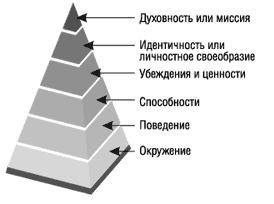

В НЛП есть одна очень интересная системная модель, разработанная Робертом Дилтсом - нейро-логические уровни (или просто Логические Уровни :)). Модель логических уровней описывает структуру организации живой системы, такой, как человек, фирма или общество. Как и у любого хорошего "штанген циркуля", у нее много практических возможностей, и одна из них, это определение уровней иерархии. Эту возможность мы сейчас и используем для получения наглядности в иерархии манипуляций. Если посмотреть на модель логических уровней целиком, то она будет выглядеть, как пирамида, в которой каждый верхний "этаж" иерархически выше нижних и управляет ими. Чтобы проще было понять, представьте себе человека, как систему, взятую за точку отсчета. Окружение человека, это предметы, люди, места, даты, сроки, и все, что нас окружает. Это то, с чем мы манипулируем в своей повседневной деятельности. Поведение (действия) - это, собственно, сама деятельность человека. Так как действия производятся над чем-то (с чем-то, где-то или когда-то), этот логический уровень включает в себя, как неотъемлемую составляющую, нижний уровень - окружение. Большая часть служебной манипуляции (приказы руководства что-то сделать, командование, указания и т.п.) находятся на этих двух логических уровнях. Просьбы и требования что-либо выполнить, что-то отдать (либо забрать :)) - тоже относятся сюда. В конечном счете, на уровнях поведения и окружения и происходит наша жизнь. На этих уровнях находится то, к чему в итоге сводятся все наши цели (деньги, секс, получения удовольствия, переживание эмоций, общение, изучение чего-то интересного). Собственно, поэтому, и большая часть манипуляций происходит на этих логических уровнях, так как это самое простое и естественное, что можно сделать, чтобы сразу получить то, что ты хочешь. Однако, и по той же причине, манипуляции на уровне поведения и окружения являются наиболее заметными, а значит - чаще встречают сопротивление. Для этого в гипнозе и используется транс и утилизация сознательного внимания (подробнее в статье что такое гипноз), чтобы обойти это сопротивление. Но провести внушения исключительно на логическом уровне поведения, так чтобы человек этого не заметил, без глубокого транса достаточно сложно. Поэтому в эриксоновском гипнозе есть прием, называющийся "релитивизация", действующий с более высокого логического уровня - с уровня возможностей. По своей сути прием прост до смешного, но невероятно эффективен за счет того, что действует с верхнего логического уровня. Суть релитивизации заключается в предложении вместо прямых команд - возможностей выполнить действие. Выглядит это так: вместо команды "войдите в транс прямо сейчас" гипнотизер говорит: "вы можете войти в транс прямо сейчас". Получается, своего рода, разрешение. А люди скорее воспользуются разрешением, чем выполнят команду :) Вы можете проверить это сами ;) Нет, серьезно, попробуйте денек, общаясь с людьми, использовать релитивизацию. Сначала сделайте несоколько заготовок для верности. Произнесите в начале предложения слово "можете", а потом дайте детальное (настолько, насколько необходимо) описание того, что сделать, с чем, где, и когда. Вот она, власть логического уровня способностей над логическим уровнем поведения! :) Суть зависимости одного логического уровня от другого примерно такая же, как и зависимость отдельно взятого пальца от руки, а отдельной взятой руки от всего организма. Манипуляции на уровне способностей и возможностей в большинстве случаев не осознаются. В этом их эффективность. Но все же они напрямую связаны с логическим уровнем поведения, и эта привязка ограничивает возможности манипуляции. Дело в том, что уровни поведения и окружения представляют собой наш опыт ("Мы продали рекламы на 10000 долларов."). Уровень способностей же является уже больше предположениями о возможном опыте, построенными в нашей голове на основе какого-то объема пережитого, увиденного, услышанного ("Вы способны продать рекламы даже на 20000 долларов"). И, хотя, предположения об опыте уже не являются им самим, предполагаемый опыт все же упоминается в них. Поэтому манипуляцию на логическом уровне способностей-возможностей полностью скрытой сделать весьма сложно. И вот тут к нам приходит на помощь логические уровни убеждений, идентичности и миссии! С точки зрения манипуляции, это просто сказка! На этих логических уровнях построены все величайшие манипуляции человечества, начиная от воспитания детей ("что такое плохо, и чем это хорошо, когда вырастешь", и "почему так делать нельзя, а папе можно") и заканчивая рекламой, октябрьской революцией с продолжением в 70 лет и, до смешного глупой, но невероятно выгодной компьютерной ошибкой 2000. Вся прелесть убеждений заключается в том, что при их кажущейся реальности и однозначности ("За деньги можно купить все. Даже самых красивых женщин, новую почку и общественное уважение."), они в большинстве случаев, полностью оторваны от настоящего опыта ("Вот только атлетическую фигуру, как у Васи, хорошо подвешенный язык, как у Пети, и сообразительную голову, как у Феди, как показала жизнь, не купишь. Этому надо учиться и тренироваться самому."). Вообще, по природе своей, убеждения это то, что помогает человеку очень удобно структурировать и систематизировать накопленный опыт, управляя классами возможностей (это опасно, это лучше так, а это полезно для того-то). Но человек, существо не безупречное в поведении, а часто и бессознательное. Поэтому с возрастом (примерно к 18 годам) огромное количество этих "костылей" для опыта оказывается так далеко от своей точки опоры, что люди начинают принимать их самих за реальную точку опоры, и жить, как если бы это было правдой, даже не проверяя. (Хотя и проверка бы им особо ничего не дала с одной то точкой зрения :)) Но есть люди, которые знают, где "костыль", а где точка опоры. В свое время они научились видеть и различать это, а потом и использовать. Это полит-технологи, рекламщики, пиарщики, лидеры различных движений, некоторые религиозные гуру, профессиональные маркетологи и все остальные, кто лихо манипулирует массовым (или частным) сознанием, создавая культуру и правила, определяющие, как жить людям, что им делать, и кому и чем им платить. Иногда это профессионалы, служащие власти, иногда безусловные лидеры управления или "серые кардиналы", иногда простые бизнесмены свободно живущие в свое удовольствие. Это люди, которые знают, где проходит граница между реальностью, в которой мы живем и действительностью, окружающей нас на самом деле. И это люди, которые умеют создавать нашу "реальность" из конструктора наших же убеждений. И пока мы не умеем жонглировать убеждениями и ценностями хотябы в четверть их способностей, нам остается только завороженно смотреть за их игрой и танцевать под их дудку. Или развиваться. Логический уровень идентичности, или личностного своеобразия (что, в общем, одно и то же), это те же убеждения, только по поводу личности в целом. (Или организации, если мы как систему рассматриваем не человека, а компанию.) Манипуляция на этом уровне еще более жесткая и еще более скрытая. Бессознательно вы ей наверняка не однократно пользовались ("Ты что не мужчина, не можешь кран в доме починить?" "Чего так мало наливаешь, не русский что ли?" :)). Другое дело, уметь пользоваться ей сознательно. Если, конечно, вы не хотите быть мальчиком на побегушках у тех, кто умеет ;) И последний логический уровень - уровень миссии. Это смысл жизни человека или целого человечества. В маркетинге это основная функция компании на рынке. На уровне миссии строятся все идеологические манипуляции, вроде коммунизма "ради светлого будущего" или религиозные "ради спасения души". Уровень миссии стоит выше уровня личности, потому что это цель, объединяющая нечто больше, чем интересы или даже жизнь одного человека. Поэтому ради стоящей (например,священной) миссии люди готовы даже с жизнью расстаться. Такая вот сильная штука, хотя по сути - те же убеждения, только уже в системной связке. Как видите, манипуляция на высоких логических уровнях много эффективнее простой манипуляции на уровне "заставить сделать". Заставить сделать можно и с помощью пистолета или простого шантажа, а манипуляция убеждениями имеет свою эстетическую красоту. Это искусство. :) Егор Булыгин,
"Вы сможете подписать контракт сразу, как мы обсудим все детали." - Я даже не предлагаю, я просто говорю, что это возможно сделать сразу :)
За счет чего? За счет все того же принципа "вложенности" - уровень поведения является составляющей частью уровня способностей (или возможностей). Ведь возможность действия может быть применена только к действию. А может быть и не применена, и вместо нее использована другая возможность. И тогда целый класс действий будет закрыт, и открыт класс других действий.
Но люди не имеют привычки смотреть на что-то как минимум с двух точек зрения (а если и имеют, то не пользуются :)). Именно поэтому убеждения и являются такой благодарной почвой для манипуляций.
Надеюсь, вы заметили пример ее использования в двух предыдущих предложениях? :)
тренер НЛП
2005 г.